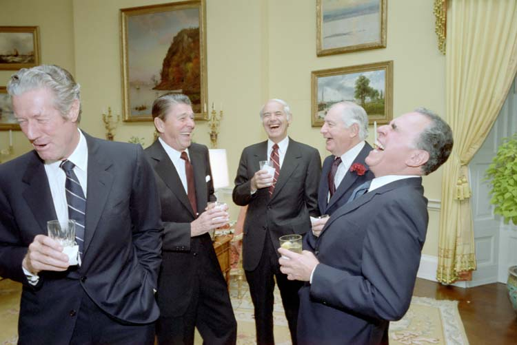

I think that you've lied
Contra is about history. In a way, it’s a prequel to Vampire Weekend’s self-titled debut, focusing on memory, the past, and concepts that shaped the attitudes of the first album.
I imagine hot sun beating down on a sweating glass of icy horchata. A big rim hat, a pair of sunglasses, two streaks of sunscreen. But it’s December. How does this sunny, warm scene take place at the dawn of winter?
It’s the Southern Hemisphere. The horchata belongs to someone from the other side of the fence.
The use of the term “Contra,” I think, immediately gets the mind racing. For an American audience, the most popular understanding of the term is in reference to Iran-Contra. I’m not going to go into the affair1 now, but suffice to say that it is an oft-cited example of modern colonial narcissism. The United States in the 80’s, obsessed with Roosevelt’s “big stick” policy, Monroe’s conquering vision, and Reagan’s mission to “defeat global communism”, decided that we could basically do whatever we want, and there wasn’t much that anyone else could do about it. So our leaders brokered deals, funded terrorists, and – worst of all – tripled the deficit. So it goes, you know? The Wikipedia page should have you covered.
Vampire Weekend shoves the memory of this history in the listener’s face, full-force. References to history books and signs for bombs are just the tip of the iceberg. Take “Holiday.” I mean, the music video speaks for itself. The preening aristocrats lounge in the same way the Horchata tourist does. And “Holiday” is about that lounging, emphasizing that presenting fun, tropical vacation spots is an easy way to get support for the colonial project from the people back at home. I mean, Ezra Koenig sings “half of me is the gasoline but the other half’s the surf,” essentially spelling out the perceived benefits of imperialism – luxury and resources.
And this isn’t a fun look. We can’t all speak Hollywood’s “California English.” If Americans were the only people with any sway in global culture, it would be a boring culture indeed – as it likely would be with any nation. But Vampire Weekend is firmly rooted in its analysis of American culture, particularly through their upper-class, Columbia lens. You know, the kind of guys who use Tom’s toothpaste and bounce their signals from one spot of the world to the next.
I don’t think that last part made sense.
Ah, sue me.
Luckily, the production rocks, too. Rostam Batmanglij layers incredibly well on tracks like “Taxi Cab,” which have disparate but polished sounds bouncing harmoniously alongside one another. And the way the guitars jump at you on “Cousins”? Oh, don’t get me started!
I think “Diplomat’s Son” is a great penultimate song. Throughout the album, we get these vignettes and windows, glimpses into a life we don’t quite yet understand. Not quite as collegiate as Vampire Weekend, but certainly still young. “Diplomat’s Son” lays these concepts out more explicitly – there’s this guy, he’s kind of a dick, he has some boy troubles.
It’s the way it’s told for me. The song is so reminiscent, so reflective. It really comes back, I think, to my point from earlier: this is a song about history, be it personal or geopolitical. And “I Think Ur A Contra”… man, that just brings it all back around.
Such a short lived little thing. A summer fling. Relaxation on beaches, sharing everything with each other. But things couldn’t work out. “You wanted good schools and friends with pools.” There was a natural divergence – they were just too separate. And there’s always that suspicion, feeling those contrary, oppositional acts.
The fade into guitar is beautiful. Sums up the whole album, really. It’s very experiential. And so cyclical. Just like that, we’re back on the beach. It’s December again.
1"Affair" is a pretty generous word for it, honestly.